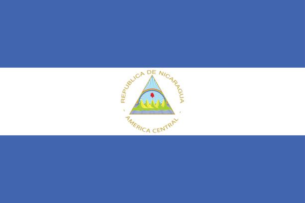
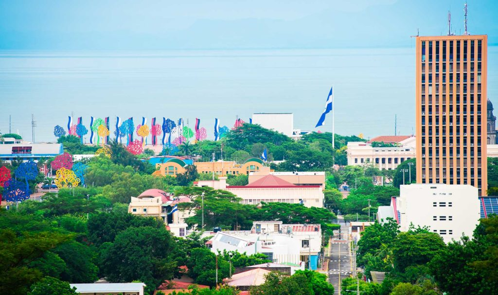
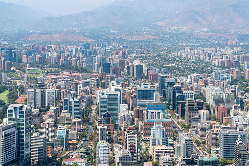
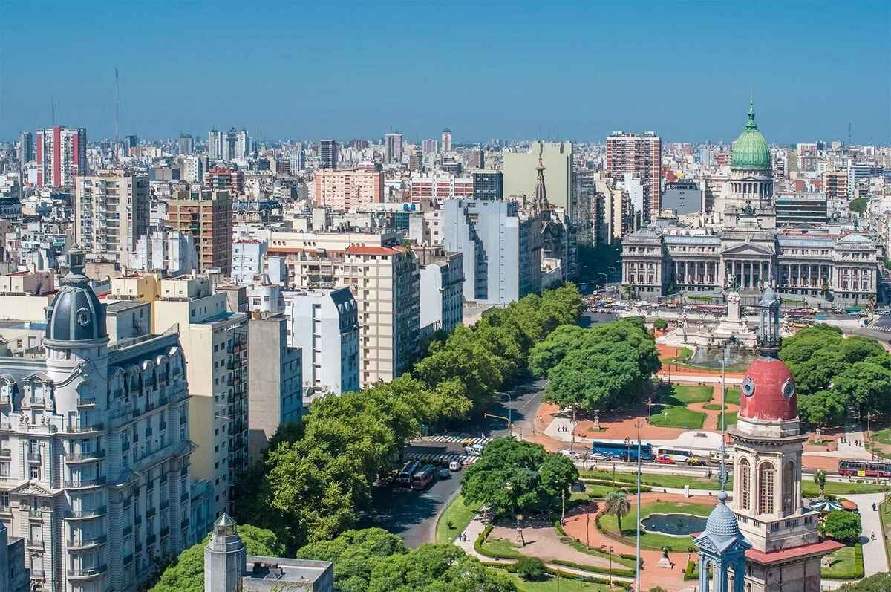
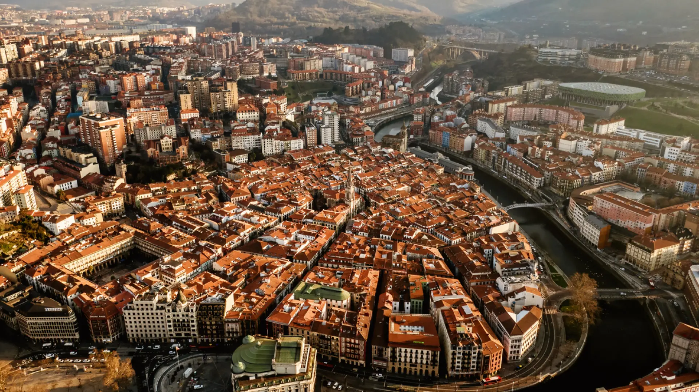
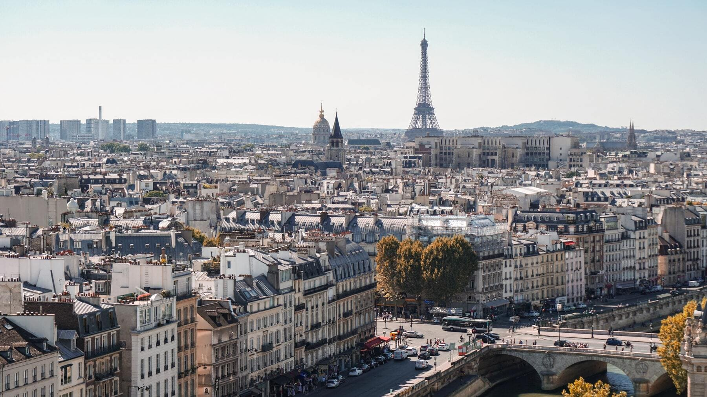
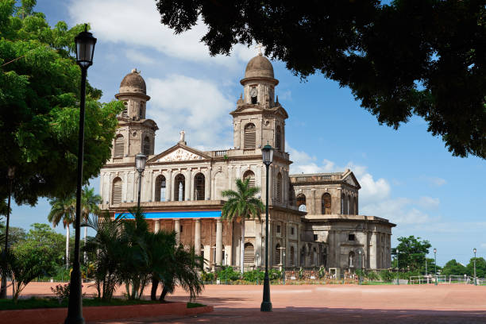

Viajar al pasado Biografía
Biografía
Mapa cultural de Rubén Darío
Un recorrido poético desde Nicaragua para el mundo
Rubén Darío
Rubén Darío fue un poeta, periodista y diplomático nicaragüense, considerado el máximo representante del modernismo literario en lengua española. Nació en 1867 en Nicaragua y su obra renovó profundamente la poesía hispanoamericana y española.
Línea de viajes de Rubén Darío

Nicaragua – 1867
Nace en Ciudad Darío.

1886 – Chile
Valparaíso y Santiago. Publica Azul…

1893 – Argentina
Reside en Buenos Aires como periodista.

1898 – España
Corresponsal en Madrid.

1900 – Francia
Estancias en París.

1914 – Nicaragua
Regreso definitivo a León.